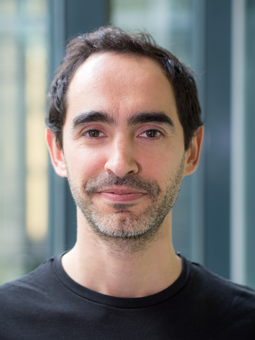

Pedro J. Gonçalves

address
Pedro J. Gonçalves
Neuro-Electronics Research Flanders (NERF)
Herestraat 49
ON5b box 4039
3000 Leuven
Belgium
about
I am a Group Leader at NERF -- a research institute empowered by imec, VIB and KU Leuven -- and an Associate Professor at KU Leuven Departments of Computer Science and Electrical Engineering. I am also a member of KU Leuven ELLIS unit (European Laboratory for Learning and Intelligent Systems). In my lab, we are broadly interested in building biologically constrained theoretical models (combining methods from dynamical systems and machine learning) to guide new experiments and ultimately refine the models to further our understanding of neural systems in health and disease.
Before starting my lab, I did a postdoc with Maneesh Sahani at the Gatsby Computational Neuroscience Unit, UCL, followed by a postdoc in Jakob Macke’s lab at the University of Tuebingen, Germany. My PhD was supervised by Christian Machens at École normale supérieure in Paris (2012).
More information at goncalveslab.sites.vib.be.
publications
selected peer-reviewed articles
Deistler M., Macke J.H.*, Gonçalves P.J.* (2022) Energy efficient network activity from disparate circuit parameters. Proc. Natl. Acad. Sci. U.S.A. 119 (44) e2207632119.
Gonçalves P.J.*, Lueckmann J.*, Deistler M.*, Nonnenmacher M., Oecal K., Bassetto G., Chintaluri C., Podlaski W.F., Haddad S.A., Vogels T.P., Greenberg D.S., Macke J.H. (2020) Training deep neural density estimators to identify mechanistic models of neural dynamics. eLife, 9, e56261.
(Excellent coverage of our work and Sean Bittner's and John Cunningham's work by Grace Lindsay for Simons Foundation: Illuminating the Dark Parameter Space of Neuroscience Modeling.)
Lueckmann J.*, Gonçalves P.J.*, Bassetto G., Oecal K., Nonnenmacher M., Macke J.H. (2017) Flexible statistical inference for mechanistic models of neural dynamics. Advances in Neural Information Processing Systems, pages 1289–1299.
peer-reviewed articles
Bernaerts Y., Deistler M., Gonçalves P.J., Beck J., Stimberg M., Scala F., Tolias A.S., Macke J.H., Kobak D., Berens P. (2025) Combined statistical-mechanistic modeling links ion channel genes to physiology of cortical neuron types. Patterns.
Zucca S.*, Schulz A.*, Gonçalves P.J., Macke J.H., Saleem A.B.*, Solomon S.G.* (2025) Visual loom caused by self-movement or object-movement elicits distinct responses in mouse superior colliculus. Current Biology.
Manzano-Patron J.P., Deistler M., Schröder C., Kypraios T., Gonçalves P.J., Macke J.H., Sotiropoulos S.H. (2025) Uncertainty mapping and probabilistic tractography using Simulation-based Inference in diffusion MRI: A comparison with classical Bayes. Medical Image Analysis, 103, 103580.
Boelts J., Deistler M., Gloeckler M., Tejero-Cantero A., Lueckmann J.-M., Moss G., Steinbach P., Moreau T., Muratore F., Linhart J., Durkan C., Vetter J., Miller B.K., Herold M., Ziaeemehr A., Pals M., Gruner T., Bischoff S., Krouglova N., Gao R., Lappalainen J.K., Mucsányi B., Pei F., Schulz A., Stefanidi Z., Rodrigues P., Schröder C., Abu Zaid F., Beck J., Kapoor J., Greenberg D.S., Gonçalves P.J., Macke J.H. (2025) sbi reloaded: a toolkit for simulation-based inference workflows. Journal of Open Source Software, 10(108), 7754.
Schulz A., Vetter J., Gao R., Morales D., Lobato-Rios V., Ramdya P., Gonçalves P.J.*, Macke J.H.* (2025) Modeling conditional distributions of neural and behavioral data with masked variational autoencoders. Cell Reports, Volume 44, Issue 3, 115338.
Schiltz E., Broux M., Aydin C, Gonçalves P.J., Haesler S. (2024) Experience shapes the transformation of olfactory representations along the cortico-hippocampal pathway. eLife, 13, RP103373.
Caenepeel C.*, Falony G.*, Machiels K., Verstockt B., Gonçalves P.J., Ferrante M., Sabino J., Raes J., Vieira-Silva S.*, Vermeire S.* (2024) Dysbiosis and associated stool features improve prediction of response to biological therapy in inflammatory bowel disease. Gastroenterology.
Confavreux B., Ramesh P., Gonçalves P.J., Macke J.H., Vogels T.P. (2023) Meta-learning families of plasticity rules in recurrent spiking networks using simulation-based inference. Advances in Neural Information Processing Systems (NeurIPS).
Deistler M., Macke J.H.*, Gonçalves P.J.* (2022) Energy efficient network activity from disparate circuit parameters. Proc. Natl. Acad. Sci. U.S.A. 119 (44) e2207632119.
Deistler M., Gonçalves P.J.*, Macke J.H.* (2022) Truncated proposals for scalable and hassle-free simulation-based inference. Advances in Neural Information Processing Systems (NeurIPS).
Calaim N.*, Dehmelt F.A.*, Gonçalves P.J.*, Machens C.K. (2022) The geometry of robustness in spiking neural networks. eLife, 11, e73276.
Ramesh P., Lueckmann J.-M., Boelts J., Tejero-Cantero A., Greenberg D.S., Gonçalves P.J., Macke J.H. (2022) GATSBI: Generative Adversarial Training for Simulation-Based Inference. International Conference on Learning Representations (ICLR).
Valle A.F., Gonçalves P.J.@, Seelig J.D.@ (2021) Integration of sleep homeostasis and navigation in Drosophila. PLoS Computational Biology, 17(7): e1009088.
Llorens-Rico V., Vieira-Silva S., Gonçalves P.J., Falony G., Raes J. (2021) Benchmarking microbiome transformations favors experimental, quantitative approaches to address compositionality and sampling depth biases. Nature Communications, 12, 3562.
Lueckmann J.-M., Boelts J., Greenberg D.S., Gonçalves P.J., Macke J.H. (2021) Benchmarking simulation-based inference. In The 24th International Conference on Artificial Intelligence and Statistics (AISTATS), PMLR 130:343-351.
Gonçalves P.J.*, Lueckmann J.*, Deistler M.*, Nonnenmacher M., Oecal K., Bassetto G., Chintaluri C., Podlaski W.F., Haddad S.A., Vogels T.P., Greenberg D.S., Macke J.H. (2020) Training deep neural density estimators to identify mechanistic models of neural dynamics. eLife, 9, e56261.
Gothner T.*, Gonçalves P.J.*, Sahani M., Linden J.F., Hildebrandt K.J. (2020) Sustained Activation of PV+ Interneurons in Auditory Cortex Enables Robust Divisive Gain Control for Complex and Naturalistic Stimuli. Cerebral Cortex.
Tejero-Cantero A., Boelts J., Deistler M., Lueckmann J.-M., Durkan C., Gonçalves P.J., Greenberg D.S., Macke J.H. (2020) sbi -- a toolkit for simulation-based inference. Journal of Open Source Software, 5(52), 2505.
Lueckmann J.*, Gonçalves P.J.*, Bassetto G., Oecal K., Nonnenmacher M., Macke J.H. (2017) Flexible statistical inference for mechanistic models of neural dynamics. Advances in Neural Information Processing Systems, pages 1289–1299.
Gonçalves P.J.*, Arrenberg A.B.*, Hablitzel B., Baier H. and Machens C.K. (2014). Optogenetic perturbations reveal the dynamics of an oculomotor integrator. Frontiers in Neural Circuits 8:10.
preprints
Deistler M., Boelts J., Steinbach P., Moss G., Moreau T., Gloeckler M., Rodrigues P.L.C., Linhart J., Lappalainen J.K., Miller B.K., Gonçalves P.J., Lueckmann J.M., Schröder C., Macke J.H. (2025) Simulation-Based Inference: A Practical Guide. (arXiv)
Confavreux B., Harrington Z., Kania M., Ramesh P., Krouglova A.N., Bozelos P., Macke J.H., Saxe A.M., Gonçalves P.J., Vogels T.P. (2025) Memory by a thousand rules: Automated discovery of functional multi-type plasticity rules reveals variety and degeneracy at the heart of learning. (bioRxiv)
Krouglova A.N., Johnson H.R., Confavreux B., Deistler M., Gonçalves P.J. (2025) Multifidelity Simulation-based Inference for Computationally Expensive Simulators. (arXiv)
Deistler M., Kadhim K.L., Pals M., Beck J., Huang Z., Gloeckler M., Lappalainen J.K., Schröder C., Berens P., Gonçalves P.J., Macke J.H. (2024) Differentiable simulation enables large-scale training of detailed biophysical models of neural dynamics. (bioRxiv)
Gao R., Deistler M., Schulz A., Gonçalves P.J., Macke J.H. (2024) Deep inverse modeling reveals dynamic-dependent invariances in neural circuit mechanisms. (bioRxiv)
Gerken F.,* Darcher A.*, Gonçalves P.J., Rapp R., Elezi I., Niediek J., Kehl M.S., Reber T.P., Liebe S., Macke J.H.*, Mormann F.*, Leal-Taixé L.* (2024) Decoding movie content from neuronal population activity in the human medial temporal lobe. (bioRxiv)
Ramesh P., Confavreux B., Gonçalves P.J.*, Vogels T.P.*, Macke J.H.* (2023) Indistinguishable network dynamics can emerge from unalike plasticity rules. (bioRxiv)
selected peer-reviewed abstracts
Boelts J., Lueckmann J.M., Gonçalves P.J., Sprekeler H., Macke J.H. Comparing neural simulations by neural density estimation. Conference on Cognitive Computational Neuroscience (2019)
*equal contributions, @corresponding author(s)
misc
some music I like
alva noto
ali farka touré
murcof
toumani diabaté
some stuff from the past
present
...